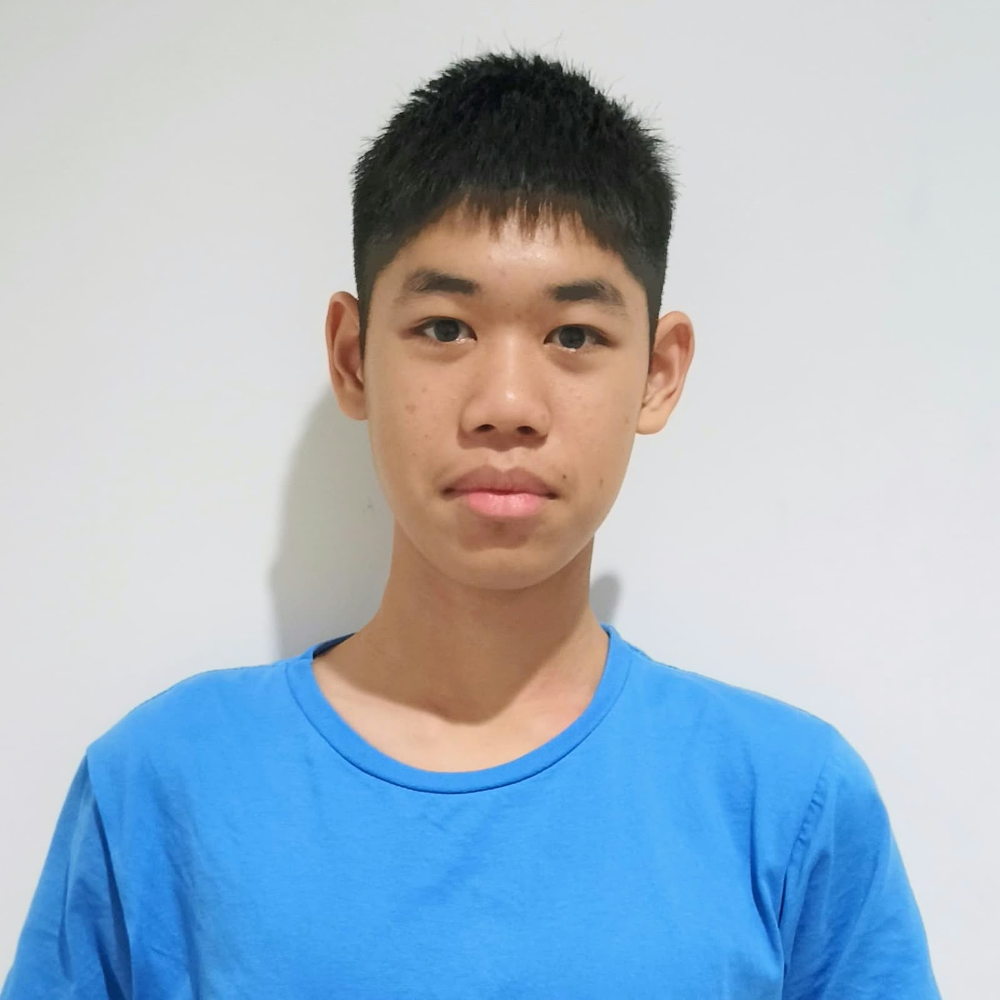

Immanuel Nathan
Siswa X TKJ 2 - SMK Kristen Immanuel Pontianak
Halo, nama saya Immanuel Nathan. Saya adalah siswa kelas X TKJ 2 di SMK Kristen Immanuel Pontianak. Saya tertarik mempelajari teknologi komputer dan pemrograman.
Saya ingin mengembangkan kemampuan dalam membuat website, memahami jaringan komputer, dan mempelajari hal-hal baru di bidang teknologi agar dapat menjadi orang yang ahli di bidang IT.